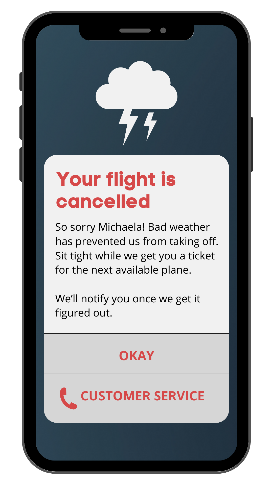

Day 1: Airplane cancellation
Scenario
A traveler is in an airport waiting for the last leg of a flight home when their flight gets abruptly cancelled due to bad weather.
Challenge
Write a message from the airline app notifying them of the cancellation and what they need to do next.
What I Did
- Focused on accommodation, both in tone and information (addressed the user by name, put the onus on "we" instead of "you", specified "next available" plane).
- Similar to ride share apps, this message tells a user that they can close the screen and await further information.
- Added a phone icon next to "Customer Service" to better indicate where the button will take a user.